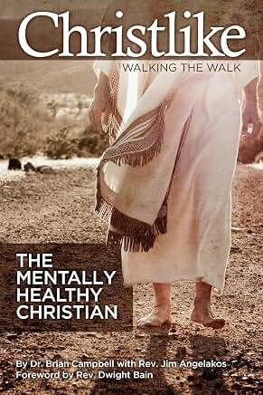

Excerpts from the book Christlike: Walking the Walk
The Mentally Healthy Christian
“But we have the mind of Christ.”(1 Corinthians 2:16)
Dr. Brian Campbell, in collaboration with Rev. Jim Angelakos · © 2026 Brian Campbell, Ph.D. All rights reserved.
Tap or click a small gold number to see the Scripture behind each statement. Scripture quotations are from the Berean Standard Bible (BSB), public domain.
The Christian’s journey into mental health begins when he first believes in Jesus Christ and repents of his sins. He is “born again,”1 and his life is never the same thereafter.2,3
The mentally healthy Christian is strong4,5 and confident.6 He draws his strength from his faith.7
1Jesus replied, “Truly, truly, I tell you, no one can see the kingdom of God unless he is born again.”
(John 3:3)
2Therefore if anyone is in Christ, he is a new creation. The old has passed away. Behold, the new has come!
(2 Corinthians 5:17)
3I have been crucified with Christ, and I no longer live, but Christ lives in me. The life I live in the body, I live by faith in the Son of God, who loved me and gave Himself up for me.
(Galatians 2:20)
4I can do all things through Christ who gives me strength.
(Philippians 4:13)
5I love You, O LORD, my strength.
(Psalm 18:1)
6But blessed is the man who trusts in the LORD, whose confidence is in Him.
(Jeremiah 17:7)
7Be on the alert. Stand firm in the faith. Be men of courage. Be strong.
(1 Corinthians 16:13)
He has accepted Jesus Christ as his Lord and Savior.8 He has repented of his sins,9 and he rests soundly in the love of God10,11 and in the assurance of his eternal salvation.12,13
The incredible sacrifice of Christ on the cross,14 who suffered and died for him personally, is always in the back of his mind. It compels him to no longer live for himself, but for Christ who died for him15—lest Christ’s sacrifice be in vain.
8But in your hearts sanctify Christ as Lord. Always be prepared to give a defense to everyone who asks you the reason for the hope that is in you. But respond with gentleness and respect,
(1 Peter 3:15)
9“The time is fulfilled,” He said, “and the kingdom of God is near. Repent and believe in the gospel!”
(Mark 1:15)
10For God so loved the world that He gave His one and only Son, that everyone who believes in Him shall not perish but have eternal life.
(John 3:16)
11And love consists in this: not that we loved God, but that He loved us and sent His Son as the atoning sacrifice for our sins.
(1 John 4:10)
12Truly, truly, I tell you, he who believes has eternal life.
(John 6:47)
13Jesus said to her, “I am the resurrection and the life. Whoever believes in Me will live, even though he dies. And everyone who lives and believes in Me will never die. Do you believe this?”
(John 11:25–26)
14He Himself bore our sins in His body on the tree, so that we might die to sin and live to righteousness. “By His stripes you are healed.”
(1 Peter 2:24)
15And He died for all, that those who live should no longer live for themselves, but for Him who died for them and was raised again.
(2 Corinthians 5:15)
16Whom have I in heaven but You? And on earth I desire no one besides You.
(Psalm 73:25)
His relationship with his Creator gives his entire life meaning and purpose.16 It is the source of his strength17 and joy.18
He takes time to develop his relationship each day through fervent prayer19,20 and active Bible study.21,22 He talks with God on a regular basis, and asks for wisdom and guidance.23
Having accepted Jesus Christ as his Lord and Savior, he has received the Holy Spirit,24 the great Counselor, who lives in him and informs his thoughts and actions.25,26
17My flesh and my heart may fail, but God is the strength of my heart and my portion forever.
(Psalm 73:26)
18The LORD is my strength and my shield; my heart trusts in Him, and I am helped. Therefore my heart rejoices, and I give thanks to Him with my song.
(Psalm 28:7)
19Devote yourselves to prayer, being watchful and thankful,
(Colossians 4:2)
20Pray in the Spirit at all times, with every kind of prayer and petition. To this end, stay alert with all perseverance in your prayers for all the saints.
(Ephesians 6:18)
21I will delight in Your statutes; I will not forget Your word.
(Psalm 119:16)
22I have hidden Your word in my heart that I might not sin against You.
(Psalm 119:11)
23Teach me good judgment and knowledge, for I believe in Your commandments.
(Psalm 119:66)
24Peter replied, “Repent and be baptized, every one of you, in the name of Jesus Christ for the forgiveness of your sins, and you will receive the gift of the Holy Spirit.
(Acts 2:38)
25And I will ask the Father, and He will give you another Advocate to be with you forever— the Spirit of truth. The world cannot receive Him, because it neither sees Him nor knows Him. But you do know Him, for He abides with you and will be in you.
(John 14:16–17)
26And when He comes, He will convict the world in regard to sin and righteousness and judgment:
(John 16:8)
He makes it a habit to find quiet times, and to listen to the “still small voice” of the Holy Spirit,27,28 as he walks through his noisy day. He is never far from God’s presence or influence.29
His faith is simple and childlike.30 He no longer argues or questions the existence of God; he simply believes.31
With each day that passes, he strives to be more Christlike in all he thinks, says, and does.32,33 Although he lives in this world, he keeps his eyes and thoughts fixed on Jesus and on heaven.34,35
27However, when the Spirit of truth comes, He will guide you into all truth. For He will not speak on His own, but He will speak what He hears, and He will declare to you what is to come.
(John 16:13)
28Those who live according to the flesh set their minds on the things of the flesh; but those who live according to the Spirit set their minds on the things of the Spirit.
(Romans 8:5)
29Draw near to God, and He will draw near to you. Cleanse your hands, you sinners, and purify your hearts, you double-minded.
(James 4:8)
30“Truly I tell you,” He said, “unless you change and become like little children, you will never enter the kingdom of heaven.
(Matthew 18:3)
31But Jesus overheard their conversation and said to Jairus, “Do not be afraid; just believe.”
(Mark 5:36)
32Whoever claims to abide in Him must walk as Jesus walked.
(1 John 2:6)
33And we, who with unveiled faces all reflect the glory of the Lord, are being transformed into His image with intensifying glory, which comes from the Lord, who is the Spirit.
(2 Corinthians 3:18)
34Let us fix our eyes on Jesus, the author and perfecter of our faith, who for the joy set before Him endured the cross, scorning its shame, and sat down at the right hand of the throne of God.
(Hebrews 12:2)
35Therefore, since you have been raised with Christ, strive for the things above, where Christ is seated at the right hand of God. Set your minds on things above, not on earthly things.
(Colossians 3:1–2)
He accepts the limitations of his intellect.36 He doesn’t insist that things “make sense” from his own narrow perspective.37 He tries not to plead, bargain, or rationalize with God when things don’t seem to be going his way—that is, the way that he thinks they should go.38
He trusts with a deep sense of confidence that, no matter what may happen, no matter what evil may take place in the world, God can work through tragic circumstances to bring a blessing to him.39,40
He is certain, with a deep conviction, that when all is said and done, God wins!41 He believes that God’s power and wisdom have no limits or boundaries.42-44
36Let no one deceive himself. If any of you thinks he is wise in this age, he should become a fool, so that he may become wise.
(1 Corinthians 3:18)
37There is no wisdom, no understanding, no counsel that can prevail against the LORD.
(Proverbs 21:30)
38The LORD has made everything for His purpose— even the wicked for the day of disaster.
(Proverbs 16:4)
39And we know that God works all things together for the good of those who love Him, who are called according to His purpose.
(Romans 8:28)
40Surely for my own welfare I had such great anguish; but Your love has delivered me from the pit of oblivion, for You have cast all my sins behind Your back.
(Isaiah 38:17)
41Many plans are in a man’s heart, but the purpose of the LORD will prevail.
(Proverbs 19:21)
42God is wise in heart and mighty in strength. Who has resisted Him and prospered?
(Job 9:4)
43Even if our hearts condemn us, God is greater than our hearts, and He knows all things.
(1 John 3:20)
44“For as the heavens are higher than the earth, so My ways are higher than your ways and My thoughts than your thoughts.
(Isaiah 55:9)
Regardless of how things may look on the surface, he believes that good will ultimately defeat evil and that there will be a final judgment day when justice will be served to all mankind.45-47
He strives to live a holy life,48,49 but is fully aware of his human weaknesses and sinful nature.50 He tries to obey God’s commandments51 and avoid deliberately or willfully sinning.52
When he falls below God’s standards, he is not too harsh on himself. Although he experiences Godly sorrow,53 he does not dwell on his sins or wallow in guilt.54
45but the Lord laughs, seeing that their day is coming.
(Psalm 37:13)
46For God will bring every deed into judgment, along with every hidden thing, whether good or evil.
(Ecclesiastes 12:14)
47Now judgment is upon this world; now the prince of this world will be cast out.
(John 12:31)
48For God has not called us to impurity, but to holiness.
(1 Thessalonians 4:7)
49But now that you have been set free from sin and have become slaves to God, the fruit you reap leads to holiness, and the outcome is eternal life.
(Romans 6:22)
50Surely I was brought forth in iniquity; I was sinful when my mother conceived me.
(Psalm 51:5)
51But Peter and the other apostles replied, “We must obey God rather than men.
(Acts 5:29)
52Keep Your servant also from willful sins; may they not rule over me. Then I will be blameless and cleansed of great transgression.
(Psalm 19:13)
53Godly sorrow brings repentance that leads to salvation without regret, but worldly sorrow brings death.
(2 Corinthians 7:10)
He is quick to accept God’s forgiveness—not because he feels that his sins are minor, but because he believes that what Jesus did on the cross is enormous.55-58
He has found through experience that the best way to handle his own sin is to confess, repent, and then move on with a determined effort to be more Christlike.59,60
Christ died on the cross for our sins. We should not “hold on” to them, lest Christ’s sacrifice be in vain.
54Then I acknowledged my sin to You and did not hide my iniquity. I said, “I will confess my transgressions to the LORD,” and You forgave the guilt of my sin. Selah
(Psalm 32:5)
55The next day John saw Jesus coming toward him and said, “Look, the Lamb of God, who takes away the sin of the world!
(John 1:29)
56that God was reconciling the world to Himself in Christ, not counting men’s trespasses against them. And He has committed to us the message of reconciliation.
(2 Corinthians 5:19)
57Therefore, there is now no condemnation for those who are in Christ Jesus. For in Christ Jesus the law of the Spirit of life set you free from the law of sin and death.
(Romans 8:1–2)
58Blessed is the man whose sin the Lord will never count against him.”
(Romans 4:8)
59If we confess our sins, He is faithful and just to forgive us our sins and to cleanse us from all unrighteousness.
(1 John 1:9)
60So they set out and preached that the people should repent.
(Mark 6:12)
As much as possible, he has stopped rebelling and submitted his will to God’s will.61-65 He tends not to rush things or to be anxious, but accepts the obvious truth that as long as he has abandoned himself to God, everything will work out when it should and as it should.66,67
He strives to keep his life in perspective.68,69 His feet are planted firmly on earth, but his eyes are focused on heaven.70,71 He real-
61Teach me to do Your will, for You are my God. May Your good Spirit lead me on level ground.
(Psalm 143:10)
62Submit yourselves, then, to God. Resist the devil, and he will flee from you.
(James 4:7)
63The world is passing away, along with its desires; but whoever does the will of God remains forever.
(1 John 2:17)
64Your kingdom come, Your will be done, on earth as it is in heaven.
(Matthew 6:10)
65You need to persevere, so that after you have done the will of God, you will receive what He has promised.
(Hebrews 10:36)
66Trust in the LORD with all your heart, and lean not on your own understanding; in all your ways acknowledge Him, and He will make your paths straight.
(Proverbs 3:5–6)
67The LORD has made everything for His purpose— even the wicked for the day of disaster.
(Proverbs 16:4)
68I consider that our present sufferings are not comparable to the glory that will be revealed in us.
(Romans 8:18)
69Rather, as it is written: “No eye has seen, no ear has heard, no heart has imagined, what God has prepared for those who love Him.”
(1 Corinthians 2:9)
70So we fix our eyes not on what is seen, but on what is unseen. For what is seen is temporary, but what is unseen is eternal.
(2 Corinthians 4:18)
lizes how very short his time is on this planet72 compared to his eternal salvation.73
He loves life, but does not desperately cling to it.74 He is well aware that he is going to die some day, but knows that God alone determines the hour and day of his death—not man, or events.75,76
He doesn’t fear sickness or death.77,78 He finds great comfort and peace in the fact that only his body will die and not his spirit and,
71For here we do not have a permanent city, but we are looking for the city that is to come.
(Hebrews 13:14)
72As for man, his days are like grass— he blooms like a flower of the field;
(Psalm 103:15)
73And this is that testimony: God has given us eternal life, and this life is in His Son.
(1 John 5:11)
74If we live, we live to the Lord, and if we die, we die to the Lord. So whether we live or die, we belong to the Lord.
(Romans 14:8)
75Since his days are determined and the number of his months is with You, and since You have set limits that he cannot exceed,
(Job 14:5)
76As no man has power over the wind to contain it, so no one has authority over his day of death. As no one can be discharged in wartime, so wickedness will not release those who practice it.
(Ecclesiastes 8:8)
77“Where, O Death, is your victory? Where, O Death, is your sting?”
(1 Corinthians 15:55)
78Even though I walk through the valley of the shadow of death, I will fear no evil, for You are with me; Your rod and Your staff, they comfort me.
(Psalm 23:4)
that at the end of his life, he will go to live with God forever.79,80 Nothing will ever separate him from the love of God.81
He expects that this world will have its trials and tribulations,82,83 but confidently believes that God will give him sufficient strength to overcome all obstacles and hardships.84,85
He is humble,86 and recognizes the folly of passing judgment on others.87 He accepts the praise of men as a compliment to God, and not as a testimony to his own skills or goodness.88,89
79But God will redeem my life from Sheol, for He will surely take me to Himself. Selah
(Psalm 49:15)
80Jesus said to her, “I am the resurrection and the life. Whoever believes in Me will live, even though he dies. And everyone who lives and believes in Me will never die. Do you believe this?”
(John 11:25–26)
81For I am convinced that neither death nor life, neither angels nor principalities, neither the present nor the future, nor any powers, neither height nor depth, nor anything else in all creation, will be able to separate us from the love of God that is in Christ Jesus our Lord.
(Romans 8:38–39)
82I have told you these things so that in Me you may have peace. In the world you will have tribulation. But take courage; I have overcome the world!”
(John 16:33)
83God is our refuge and strength, an ever-present help in times of trouble.
(Psalm 46:1)
84I can do all things through Christ who gives me strength.
(Philippians 4:13)
85Many are the afflictions of the righteous, but the LORD delivers him from them all.
(Psalm 34:19)
86Has not My hand made all these things? And so they came into being,” declares the LORD. “This is the one I will esteem: he who is humble and contrite in spirit, who trembles at My word.
(Isaiah 66:2)
87Do not judge, and you will not be judged. Do not condemn, and you will not be condemned. Forgive, and you will be forgiven.
(Luke 6:37)
88“Why do you call Me good?” Jesus replied. “No one is good except God alone.
(Mark 10:18)
He enjoys God’s creation and the pleasures of this world,90 but is not a slave to his own lusts and desires.91,92 He exhibits selfcontrol.93 He is not “addicted” to anything but God.94
He works hard to keep his conscience clear,95 and listens carefully to the things that he says to himself.96 He is increasingly aware of the lies that the secular world has taught him,97,98 and silences them with biblical truths and active prayer.99,100
89Not that we are competent in ourselves to claim that anything comes from us, but our competence comes from God.
(2 Corinthians 3:5)
90And God looked upon all that He had made, and indeed, it was very good. And there was evening, and there was morning—the sixth day.
(Genesis 1:31)
91Beloved, I urge you, as foreigners and exiles, to abstain from the desires of the flesh, which war against your soul.
(1 Peter 2:11)
92Flee from youthful passions and pursue righteousness, faith, love, and peace, together with those who call on the Lord out of a pure heart.
(2 Timothy 2:22)
93Be sober-minded and alert. Your adversary the devil prowls around like a roaring lion, seeking someone to devour.
(1 Peter 5:8)
94Therefore do not let sin reign in your mortal body so that you obey its desires.
(Romans 6:12)
95In this hope, I strive always to maintain a clear conscience before God and man.
(Acts 24:16)
96The LORD detests the thoughts of the wicked, but the words of the pure are pleasant to Him.
(Proverbs 15:26)
97Pay close attention to your life and to your teaching. Persevere in these things, for by so doing you will save both yourself and those who hear you.
(1 Timothy 4:16)
98How long, O men, will my honor be maligned? How long will you love vanity and seek after lies? Selah
(Psalm 4:2)
99I have chosen the way of truth; I have set Your ordinances before me.
(Psalm 119:30)
Each day, he gains more and more control over his thinking; he kicks out unwanted intruders and wild imaginings.101 He guards what comes into his mind, and is careful about what he sees and hears.102-104
He makes it a habit to focus on the positive things in life—the good, the pure, the admirable, and the praiseworthy—rather than the evils and tragedies that are prevalent in our fallen world.105 He takes time each day to remember the many ways in which God has blessed him.106,107
100For the word of God is living and active. Sharper than any double-edged sword, it pierces even to dividing soul and spirit, joints and marrow. It judges the thoughts and intentions of the heart.
(Hebrews 4:12)
101We tear down arguments and every presumption set up against the knowledge of God; and we take captive every thought to make it obedient to Christ.
(2 Corinthians 10:5)
102“Watch and pray so that you will not enter into temptation. For the spirit is willing, but the body is weak.”
(Matthew 26:41)
103Then after desire has conceived, it gives birth to sin; and sin, when it is full-grown, gives birth to death.
(James 1:15)
104Guard your heart with all diligence, for from it flow springs of life.
(Proverbs 4:23)
105Finally, brothers, whatever is true, whatever is honorable, whatever is right, whatever is pure, whatever is lovely, whatever is admirable—if anything is excellent or praiseworthy—think on these things.
(Philippians 4:8)
106From His fullness we have all received grace upon grace.
(John 1:16)
107The LORD has done great things for us; we are filled with joy.
(Psalm 126:3)
108with all humility and gentleness, with patience, bearing with one another in love,
(Ephesians 4:2)
He is patient108-110 and controls his anger.111 He is careful about what he says and how he acts.112 He realizes how harmful his remarks can be, and tries not to be cruel or hurtful in thought, or word, or deed.113
Regardless of his circumstances, he makes an effort to be happy,114,115 joyful,116 cheerful,117 and thankful.118 He fills his heart with songs of praise to the Lord.119-121
109Love is patient, love is kind. It does not envy, it does not boast, it is not proud.
(1 Corinthians 13:4)
110A man’s insight gives him patience, and his virtue is to overlook an offense.
(Proverbs 19:11)
111Mockers inflame a city, but the wise turn away anger.
(Proverbs 29:8)
112If anyone speaks, he should speak as one conveying the words of God. If anyone serves, he should serve with the strength God provides, so that in all things God may be glorified through Jesus Christ, to whom be the glory and the power forever and ever. Amen.
(1 Peter 4:11)
113Speaking rashly is like a piercing sword, but the tongue of the wise brings healing.
(Proverbs 12:18)
114I know that there is nothing better for them than to rejoice and do good while they live,
(Ecclesiastes 3:12)
115But the righteous will be glad and rejoice before God; they will celebrate with joy.
(Psalm 68:3)
116Rejoice at all times. Pray without ceasing.
(1 Thessalonians 5:16–17)
117All the days of the oppressed are bad, but a cheerful heart has a continual feast.
(Proverbs 15:15)
118that my heart may sing Your praises and not be silent. O LORD my God, I will give thanks forever.
(Psalm 30:12)
119Rejoice in the LORD, O righteous ones; it is fitting for the upright to praise Him.
(Psalm 33:1)
120I will sing to the LORD all my life; I will sing praise to my God while I have my being.
(Psalm 104:33)
121I will sing to the LORD, for He has been good to me.
(Psalm 13:6)
He consults God, makes his plans for the future, but then lets go and lets God work through him.122 He commits everything he does to the Lord.123 He has learned through experience that no matter what grand plans he may have, it is the Lord’s purpose that prevails.124-126
He strives to live one day at a time and in the present moment. He realizes how futile it is to needlessly worry about tomorrow (which he cannot predict or control)127,128 or focus on the past (which he cannot change).129,130
122There is no wisdom, no understanding, no counsel that can prevail against the LORD.
(Proverbs 21:30)
123Commit your works to the LORD and your plans will be achieved.
(Proverbs 16:3)
124A man’s heart plans his course, but the LORD determines his steps.
(Proverbs 16:9)
125Many plans are in a man’s heart, but the purpose of the LORD will prevail.
(Proverbs 19:21)
126May He give you the desires of your heart and make all your plans succeed.
(Psalm 20:4)
127In the day of prosperity, be joyful, but in the day of adversity, consider this: God has made one of these along with the other, so that a man cannot discover anything that will come after him.
(Ecclesiastes 7:14)
128Therefore do not worry about tomorrow, for tomorrow will worry about itself. Today has enough trouble of its own.
(Matthew 6:34)
129Brothers, I do not consider myself yet to have taken hold of it. But one thing I do: Forgetting what is behind and straining toward what is ahead, I press on toward the goal to win the prize of God’s heavenly calling in Christ Jesus.
(Philippians 3:13–14)
130“Do not call to mind the former things; pay no attention to the things of old.
(Isaiah 43:18)
He doesn’t fear anything except God alone.131,132 When worry and anxiety well up within him, he turns to the Lord and remembers His promises.133,134 He finds refuge in God135,136 and does not fear man or anything that others may do to him.137,138
Anxiety is the number one mental health problem worldwide.
131The fear of the LORD is the beginning of knowledge, but fools despise wisdom and discipline.
(Proverbs 1:7)
132The LORD is on my side; I will not be afraid. What can man do to me?
(Psalm 118:6)
133When I am afraid, I put my trust in You.
(Psalm 56:3)
134Cast all your anxiety on Him, because He cares for you.
(1 Peter 5:7)
135Kiss the Son, lest He be angry and you perish in your rebellion, when His wrath ignites in an instant. Blessed are all who take refuge in Him.
(Psalm 2:12)
136He will cover you with His feathers; under His wings you will find refuge; His faithfulness is a shield and rampart.
(Psalm 91:4)
137Do not be afraid of those who kill the body but cannot kill the soul. Instead, fear the One who can destroy both soul and body in hell.
(Matthew 10:28)
138The LORD is on my side; I will not be afraid. What can man do to me?
(Psalm 118:6)
He is a man of integrity.139,140 He is honest141,142 and trustworthy.143 He tries to be truthful144 at all times and avoids lying145 and deception.146
He walks with confidence147 and a strong sense of self-worth.148 He basks in the knowledge that the Creator of the universe loves him149 and watches over him.150
139The integrity of the upright guides them, but the perversity of the faithless destroys them.
(Proverbs 11:3)
140He who walks in integrity walks securely, but he who perverts his ways will be found out.
(Proverbs 10:9)
141An honest answer given is like a kiss on the lips.
(Proverbs 24:26)
142Honest scales and balances are from the LORD; all the weights in the bag are His concern.
(Proverbs 16:11)
143Whoever is faithful with very little will also be faithful with much, and whoever is dishonest with very little will also be dishonest with much.
(Luke 16:10)
144Truthful lips endure forever, but a lying tongue lasts only a moment.
(Proverbs 12:19)
145Lying lips are detestable to the LORD, but those who deal faithfully are His delight.
(Proverbs 12:22)
146You must not steal. You must not lie or deceive one another.
(Leviticus 19:11)
147For You are my hope, O Lord GOD, my confidence from my youth.
(Psalm 71:5)
148For we are God’s workmanship, created in Christ Jesus to do good works, which God prepared in advance as our way of life.
(Ephesians 2:10)
149How precious is Your loving devotion, O God, that the children of men take refuge in the shadow of Your wings!
(Psalm 36:7)
150And even the very hairs of your head are all numbered. So do not be afraid; you are worth more than many sparrows.
(Luke 12:7)
He is a child of God,151 created in God’s image152—a little lower than the heavenly beings.153
He realizes that true joy and happiness flow from his relationship with God, and not from material possessions.154 He views all things as gifts from God, and does not look down on others who have less.
He has compassion for the poor and needy,155,156 and recognizes the blessings associated with giving and sharing.157 He realizes that he will not take any of his possessions to heaven,158 and how dangerous it is to let a desire for wealth dominate his life.159
151‘For in Him we live and move and have our being.’ As some of your own poets have said, ‘We are His offspring.’
(Acts 17:28)
152Then God said, “Let Us make man in Our image, after Our likeness, to rule over the fish of the sea and the birds of the air, over the livestock, and over all the earth itself and every creature that crawls upon it.”
(Genesis 1:26)
153You made him a little lower than the angels; You crowned him with glory and honor.
(Psalm 8:5)
154More than that, I count all things as loss compared to the surpassing excellence of knowing Christ Jesus my Lord, for whom I have lost all things. I consider them rubbish, that I may gain Christ and be found in Him, not having my own righteousness from the law, but that which is through faith in Christ, the righteousness from God on the basis of faith.
(Philippians 3:8–9)
155Open your mouth, judge righteously, and defend the cause of the poor and needy.
(Proverbs 31:9)
156He who mocks the poor insults their Maker; whoever gloats over calamity will not go unpunished.
(Proverbs 17:5)
157Share with the saints who are in need. Practice hospitality.
(Romans 12:13)
158saying: “Naked I came from my mother’s womb, and naked I will return. The LORD gave, and the LORD has taken away. Blessed be the name of the LORD.”
(Job 1:21)
159For the love of money is the root of all kinds of evil. By craving it, some have wandered away from the faith and pierced themselves with many sorrows.
(1 Timothy 6:10)
As he grows older, he finds it increasingly easy to forgive himself and to forgive others.160,161 He has become keenly aware of his own sin and short-comings,162 and this fact makes it easier to forgive those who have hurt him.163,164
He has moved on from his childhood, and doesn’t continue to blame his upbringing for the way he feels, or for his current condition.165,166 He understands that he has the Divine gift of free will, and the power to change and improve his life.167,168
160Be kind and tenderhearted to one another, forgiving each other just as in Christ God forgave you.
(Ephesians 4:32)
161Do not judge, and you will not be judged. Do not condemn, and you will not be condemned. Forgive, and you will be forgiven.
(Luke 6:37)
162This is a trustworthy saying, worthy of full acceptance: Christ Jesus came into the world to save sinners, of whom I am the worst.
(1 Timothy 1:15)
163Not that I have already obtained all this, or have already been made perfect, but I press on to take hold of that for which Christ Jesus took hold of me.
(Philippians 3:12)
164So this is the principle I have discovered: When I want to do good, evil is right there with me.
(Romans 7:21)
165Brothers, I do not consider myself yet to have taken hold of it. But one thing I do: Forgetting what is behind and straining toward what is ahead, I press on toward the goal to win the prize of God’s heavenly calling in Christ Jesus.
(Philippians 3:13–14)
166Bear with one another and forgive any complaint you may have against someone else. Forgive as the Lord forgave you.
(Colossians 3:13)
167I call heaven and earth as witnesses against you today that I have set before you life and death, blessing and cursing. Therefore choose life, so that you and your descendants may live, and that you may love the LORD your God, obey Him, and hold fast to Him. For He is your life, and He will prolong your life in the land that the LORD swore to give to your fathers, to Abraham, Isaac, and Jacob.”
(Deuteronomy 30:19–20)
168But He replied, “My mother and brothers are those who hear the word of God and carry it out.”
(Luke 8:21)
He tries to live life as a servant,169 just as Christ lived His life.170 He seeks to serve God171 as well as his fellow man.172 He knows there is much more joy in giving than receiving.173
He trusts deeply in the Lord,174 and rests in the assurance that God will provide his basic needs of food and clothing—just as He promised.175 No matter how humble his job may be, he works for the glory of God.176
Although he is active in trying to improve his thinking and behavior, he realizes the awesome power of simply abiding in God.177 He
169But it shall not be this way among you. Instead, whoever wants to become great among you must be your servant, and whoever wants to be first must be the slave of all.
(Mark 10:43–44)
170For even the Son of Man did not come to be served, but to serve, and to give His life as a ransom for many.”
(Mark 10:45)
171Above all, fear the LORD and serve Him faithfully with all your heart; consider what great things He has done for you.
(1 Samuel 12:24)
172Sitting down, Jesus called the Twelve and said, “If anyone wants to be first, he must be the last of all and the servant of all.”
(Mark 9:35)
173In everything, I showed you that by this kind of hard work we must help the weak, remembering the words of the Lord Jesus Himself: ‘It is more blessed to give than to receive.’”
(Acts 20:35)
174But You, O God, will bring them down to the Pit of destruction; men of bloodshed and deceit will not live out half their days. But I will trust in You.
(Psalm 55:23)
175Therefore do not worry, saying, ‘What shall we eat?’ or ‘What shall we drink?’ or ‘What shall we wear?’ For the Gentiles strive after all these things, and your heavenly Father knows that you need them.
(Matthew 6:31–32)
176Whatever you do, work at it with your whole being, for the Lord and not for men, because you know that you will receive an inheritance from the Lord as your reward. It is the Lord Christ you are serving.
(Colossians 3:23–24)
177Remain in Me, and I will remain in you. Just as no branch can bear fruit by itself unless it remains in the vine, neither can you bear fruit unless you remain in Me.
(John 15:4)
has learned that the most profound changes in character take place not because of any effort he makes, but because of God’s action—God working in him and through him.178
He shows respect for all human beings,179 no matter how “lowly” their station in life may be.180 He works hard not to show favoritism,181,182 or judge by external appearances.183
He is gentle184 and kind185 and his life reflects goodness and godliness.186
178I am the vine and you are the branches. The one who remains in Me, and I in him, will bear much fruit. For apart from Me you can do nothing.
(John 15:5)
179Treat everyone with high regard: Love the brotherhood of believers, fear God, honor the king.
(1 Peter 2:17)
180Do nothing out of selfish ambition or empty pride, but in humility consider others more important than yourselves.
(Philippians 2:3)
181My brothers, as you hold out your faith in our glorious Lord Jesus Christ, do not show favoritism.
(James 2:1)
182Then Peter began to speak: “I now truly understand that God does not show favoritism, but welcomes those from every nation who fear Him and do what is right.
(Acts 10:34–35)
183But as for the highly esteemed—whatever they were makes no difference to me; God does not show favoritism—those leaders added nothing to me.
(Galatians 2:6)
184Let your gentleness be apparent to all. The Lord is near.
(Philippians 4:5)
185Love is patient, love is kind. It does not envy, it does not boast, it is not proud.
(1 Corinthians 13:4)
186For this very reason, make every effort to add to your faith virtue; and to virtue, knowledge; and to knowledge, self-control; and to self-control, perseverance; and to perseverance, godliness; and to godliness, brotherly kindness; and to brotherly kindness, love.
(2 Peter 1:5–7)
He is bold187,188 and assertive when he needs to be, and stands up to injustice and hypocrisy.189 He gently rebukes those who are caught in sin.190 He defends his faith191 and those who are unable to protect themselves.192
He is hopeful193,194 and peaceful.195,196 He has one eye on heaven. He knows that no matter what happens on this earth, he will soon see Christ face to face,197 and be reunited with his loved ones.198
187On the day I called, You answered me; You emboldened me and strengthened my soul.
(Psalm 138:3)
188Then Jesus entered the temple courts and began to drive out those who were selling there.
(Luke 19:45)
189But when John saw many of the Pharisees and Sadducees coming to his place of baptism, he said to them, “You brood of vipers, who warned you to flee from the coming wrath?
(Matthew 3:7)
190Brothers, if someone is caught in a trespass, you who are spiritual should restore him with a spirit of gentleness. But watch yourself, or you also may be tempted.
(Galatians 6:1)
191But in your hearts sanctify Christ as Lord. Always be prepared to give a defense to everyone who asks you the reason for the hope that is in you. But respond with gentleness and respect,
(1 Peter 3:15)
192Open your mouth, judge righteously, and defend the cause of the poor and needy.
(Proverbs 31:9)
193But I will always hope and will praise You more and more.
(Psalm 71:14)
194Rest in God alone, O my soul, for my hope comes from Him.
(Psalm 62:5)
195The LORD gives His people strength; the LORD blesses His people with peace.
(Psalm 29:11)
196Abundant peace belongs to those who love Your law; nothing can make them stumble.
(Psalm 119:165)
197As for me, I will behold Your face in righteousness; when I awake, I will be satisfied in Your presence.
(Psalm 17:15)
198In My Father’s house are many rooms. If it were not so, would I have told you that I am going there to prepare a place for you?
(John 14:2)
He has compassion for the unborn,199 the unloved,200 the prisoner,201 and the prostitute.202,203 He is aware of his own shortcomings, and is slow to judge, and quick to forgive.204
His life radiates with love.205-208 He loves others more than himself, and he loves God above all else.209
199For You formed my inmost being; You knit me together in my mother’s womb.
(Psalm 139:13)
200Your kingdom is an everlasting kingdom, and Your dominion endures through all generations. The LORD is faithful in all His words and kind in all His actions.
(Psalm 145:13)
201Remember those in prison as if you were bound with them, and those who are mistreated as if you were suffering with them.
(Hebrews 13:3)
202When they continued to question Him, He straightened up and said to them, “Let him who is without sin among you be the first to cast a stone at her.”
(John 8:7)
203Then Jesus straightened up and asked her, “Woman, where are your accusers? Has no one condemned you?” “No one, Lord,” she answered. “Then neither do I condemn you,” Jesus declared. “Now go and sin no more.”
(John 8:10–11)
204Do not judge, and you will not be judged. Do not condemn, and you will not be condemned. Forgive, and you will be forgiven.
(Luke 6:37)
205By this everyone will know that you are My disciples, if you love one another.”
(John 13:35)
206Do everything in love.
(1 Corinthians 16:14)
207This is My commandment, that you love one another as I have loved you.
(John 15:12)
208Since you have purified your souls by obedience to the truth so that you have a genuine love for your brothers, love one another deeply, from a pure heart.
(1 Peter 1:22)
209Jesus declared, “‘Love the Lord your God with all your heart and with all your soul and with all your mind.’ This is the first and greatest commandment. And the second is like it: ‘Love your neighbor as yourself.’
(Matthew 22:37–39)

From Christlike: Walking the Walkby Dr. Brian Campbell with Rev. Jim Angelakos